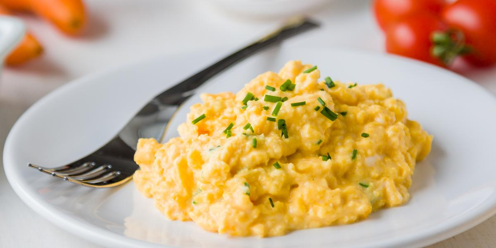

Ovo com queijo, facil e muito saboroso!

Sim, esse site é dedicado á amantes de queijo!
e essa receita é sensacional!
Ingredientes:
- 1/2 queijo minas frescal picado em cubinhos
- 2 ovos
- 1 colher de óleo
- Sal a gosto
Modo de preparo:
- Em uma panela coloque o óleo e espere esquentar.
- Logo em seguida acrescente os ovos e o queijo e misture bem até o ovo perder a aparência de cru.
- Acrescente o sal até achar que está bem temperado.
- Coma em seguida.
Home